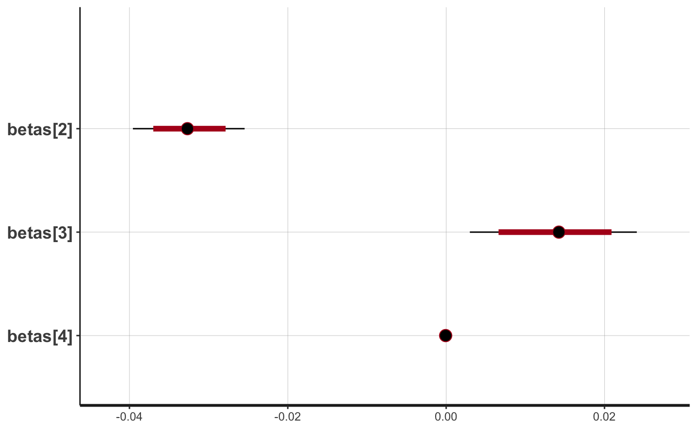
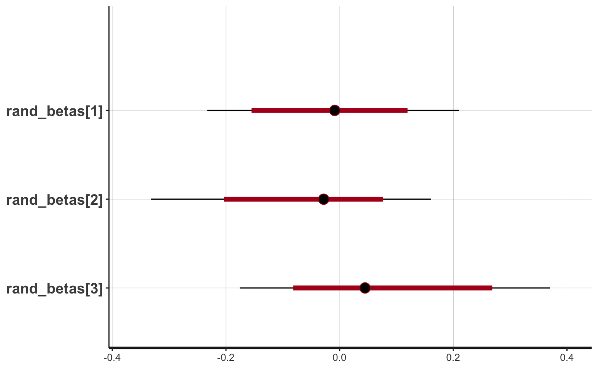

artemis
modeling.RmdA primary purpose of the artemis package is to facilitate modeling of qPCR data from eDNA samples. It does this via two functions: eDNA_lm() for fixed effects models and eDNA_lmer() for mixed effects models.
The underlying Stan models are pre-compiled in the package, but can be found in the artemis source code here.
Both modeling functions require the following inputs:
A vector of numeric Cq values (one for each qPCR replicate). Cq values corresponding to non-detections for your assay should be recorded as the threshold value (the default is 40.0 cycles).
The intercept value \(\alpha\) and the slope value \(\beta\) from a standard curve equation associated with the qPCR analysis.
An example of qPCR data in the correct format for modeling with artemis can be viewed by calling eDNA_data, which is a dataframe with Cq values from live car experiments completed in the California Sacramento-San Joaquin Delta with Delta Smelt:
head(eDNA_data)
#> Date SampleID TechnicalRep FilterNumber Distance Volume Cq
#> 1 2019-01-24 1 1 1 0 20 34.47658
#> 2 2019-01-24 1 2 1 0 20 33.90252
#> 3 2019-01-24 1 3 1 0 20 34.41304
#> 4 2019-01-24 1 4 1 0 20 34.30393
#> 5 2019-01-24 1 5 1 0 20 34.85147
#> 6 2019-01-24 1 6 1 0 20 34.40556
str(eDNA_data)
#> 'data.frame': 732 obs. of 7 variables:
#> $ Date : Date, format: "2019-01-24" "2019-01-24" ...
#> $ SampleID : int 1 1 1 1 1 1 1 1 2 2 ...
#> $ TechnicalRep: num 1 2 3 4 5 6 7 8 1 2 ...
#> $ FilterNumber: num 1 1 1 1 1 1 1 1 2 2 ...
#> $ Distance : num 0 0 0 0 0 0 0 0 0 0 ...
#> $ Volume : num 20 20 20 20 20 20 20 20 20 20 ...
#> $ Cq : num 34.5 33.9 34.4 34.3 34.9 ...As the sample data is just a subset, it’s a bit unbalanced - some variable levels are associated with 15 replicate filters and 8 technical replicates per filter, while others have 5 replicate filters with 12 technical replicates, and the distribution of technical replicates across variable levels is uneven:
table(eDNA_data$FilterNumber, eDNA_data$TechnicalRep)
#>
#> 1 2 3 4 5 6 7 8 9 10 11 12
#> 1 11 11 11 11 11 11 11 11 9 9 9 9
#> 2 12 12 12 12 12 12 12 12 9 9 9 9
#> 3 12 12 12 12 12 12 12 12 9 9 9 9
#> 4 12 12 12 12 12 12 12 12 9 9 9 9
#> 5 12 12 12 12 12 12 12 12 9 9 9 9
#> 6 1 1 1 1 1 1 1 1 0 0 0 0
#> 7 1 1 1 1 1 1 1 1 0 0 0 0
#> 8 1 1 1 1 1 1 1 1 0 0 0 0
#> 9 1 1 1 1 1 1 1 1 0 0 0 0
#> 10 1 1 1 1 1 1 1 1 0 0 0 0
#> 11 1 1 1 1 1 1 1 1 0 0 0 0
#> 12 1 1 1 1 1 1 1 1 0 0 0 0
#> 13 1 1 1 1 1 1 1 1 0 0 0 0
#> 14 1 1 1 1 1 1 1 1 0 0 0 0
#> 15 1 1 1 1 1 1 1 1 0 0 0 0
table(eDNA_data$Volume, eDNA_data$Distance)
#>
#> 0 150 300
#> 20 100 60 60
#> 50 212 60 60
#> 100 60 60 60The models handle this, as long as there are no variable levels with missing or NA values - Stan models do not take NA values, and any rows with NAs in the data will be dropped in the construction of the model matrix when the data is prepped for modeling.
eDNA_lm()
To fit a fixed effects model to the sample eDNA_data where Distance is the only predictor, we give the function a model formula and the input data listed above:
By default, the model functions will add an intercept term, but you can explicitly omit the intercept if you have a good reason for doing so. Full control of the MCMC algorithm can be accomplished by adding these control arguments to the end of the eDNA_lm*() call, which then passes them on to rstan::stan(). For example,
model_fit = eDNA_lm(Cq ~ Distance,
data = eDNA_data,
std_curve_alpha = 21.2, std_curve_beta = -1.5,
iter = 500,
seed = 1234,
n_chain = 1) # we don't recommend sampling just 1 chain; the default is 4By default, artemis suppresses the (often verbose) output from Stan, but users can (and should) enable it with verbose = TRUE when the model is slow or the output suggests the MCMC algorithm might not have converged, for example,
model_fit = eDNA_lm(Cq ~ Distance + Volume + Distance*Volume,
data = eDNA_data,
std_curve_alpha = 21.2, std_curve_beta = -1.5,
iter = 500,
seed = 1234,
n_chain = 1, # set to 1 for vignette; default is 4
verbose = TRUE)
#>
#> SAMPLING FOR MODEL 'eDNA_lm' NOW (CHAIN 1).
#> Chain 1: Rejecting initial value:
#> Chain 1: Log probability evaluates to log(0), i.e. negative infinity.
#> Chain 1: Stan can't start sampling from this initial value.
#> Chain 1: Rejecting initial value:
#> Chain 1: Log probability evaluates to log(0), i.e. negative infinity.
#> Chain 1: Stan can't start sampling from this initial value.
#> Chain 1: Rejecting initial value:
#> Chain 1: Log probability evaluates to log(0), i.e. negative infinity.
#> Chain 1: Stan can't start sampling from this initial value.
#> Chain 1: Rejecting initial value:
#> Chain 1: Log probability evaluates to log(0), i.e. negative infinity.
#> Chain 1: Stan can't start sampling from this initial value.
#> Chain 1: Rejecting initial value:
#> Chain 1: Log probability evaluates to log(0), i.e. negative infinity.
#> Chain 1: Stan can't start sampling from this initial value.
#> Chain 1:
#> Chain 1: Gradient evaluation took 0.000183 seconds
#> Chain 1: 1000 transitions using 10 leapfrog steps per transition would take 1.83 seconds.
#> Chain 1: Adjust your expectations accordingly!
#> Chain 1:
#> Chain 1:
#> Chain 1: Iteration: 1 / 500 [ 0%] (Warmup)
#> Chain 1: Iteration: 100 / 500 [ 20%] (Warmup)
#> Chain 1: Iteration: 200 / 500 [ 40%] (Warmup)
#> Chain 1: Iteration: 251 / 500 [ 50%] (Sampling)
#> Chain 1: Iteration: 350 / 500 [ 70%] (Sampling)
#> Chain 1: Iteration: 450 / 500 [ 90%] (Sampling)
#> Chain 1: Iteration: 500 / 500 [100%] (Sampling)
#> Chain 1:
#> Chain 1: Elapsed Time: 0.427212 seconds (Warm-up)
#> Chain 1: 0.277835 seconds (Sampling)
#> Chain 1: 0.705047 seconds (Total)
#> Chain 1:eDNA_lmer()
To fit a model with one or more random effect(s), use the eDNA_lmer() function. Random effects are specified using the same syntax as the lme4 package, e.g. (1|random effect):
d = eDNA_data # create a copy to modify
d$Year = factor(sample(2018:2020, size = nrow(d), replace = TRUE)) # create a random variable
model_fit2 = eDNA_lmer(Cq ~ Distance + Volume + (1|Year),
data = d,
std_curve_alpha = 21.2, std_curve_beta = -1.5,
iter = 1000,
seed = 1234,
n_chain = 1) # set to 1 for vignette; default is 4As with the simulation objects, the model results can be summarized or plotted with default methods using summary() and plot(), or converted to a dataframe object for further manipulation.
summary(model_fit)
#> mean 2.5% 50% 97.5%
#> (Intercept) -1.107705e+01 -11.692629671 -1.108192e+01 -1.047555e+01
#> Distance -3.259486e-02 -0.039558400 -3.269469e-02 -2.546558e-02
#> Volume 1.370718e-02 0.003001874 1.430339e-02 2.408074e-02
#> Distance:Volume -6.062977e-05 -0.000174043 -6.295006e-05 5.449430e-05
#> CQ sd 3.787568e+00 3.501340944 3.778640e+00 4.086409e+00
plot(model_fit, pars = c(sprintf("betas[%d]", 2:4)))
#> ci_level: 0.8 (80% intervals)
#> outer_level: 0.95 (95% intervals)
Matching lme4 convention, random effects are not included in the default summary() output. You can view or plot the random effects estimates by subsetting the stanfit slot of the model object with @, and specifying the random_betas parameters with the pars argument:
summary(model_fit2@stanfit, pars = "rand_betas", probs = c(0.50, 0.025, 0.975))$summary
#> mean se_mean sd 50% 2.5%
#> rand_betas[1] -0.14102792 0.009706303 0.1612909 -0.121575224 -0.4972084
#> rand_betas[2] -0.02112101 0.005814922 0.1363885 -0.008735248 -0.3164415
#> rand_betas[3] 0.16214892 0.008958122 0.1690837 0.147496810 -0.1113121
#> 97.5% n_eff Rhat
#> rand_betas[1] 0.08350034 276.1291 0.9992028
#> rand_betas[2] 0.27322598 550.1330 0.9980351
#> rand_betas[3] 0.52594399 356.2618 0.9987929
plot(model_fit2@stanfit, pars = "rand_betas")
#> ci_level: 0.8 (80% intervals)
#> outer_level: 0.95 (95% intervals)
Because the models implemented in artemis are Bayesian, you will get the most out of their results when you can work with and summarize posterior probabilities. Some helpful resources for this are the Stan User’s Guide, and the stanfit objects vignette from the rstan package.